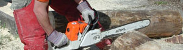

Dienst am Vaterlande
1 von 6beni vom 27. bis 31.10 und gebi einführungskurs vom 3. -7.11. - horror!

beni vom 27. bis 31.10 und gebi einführungskurs vom 3. -7.11. - horror!

Montagsplausch Nr. 30. Der Abend hiess «zivilschutz (ausseneinsatz im kanton obwalden)».